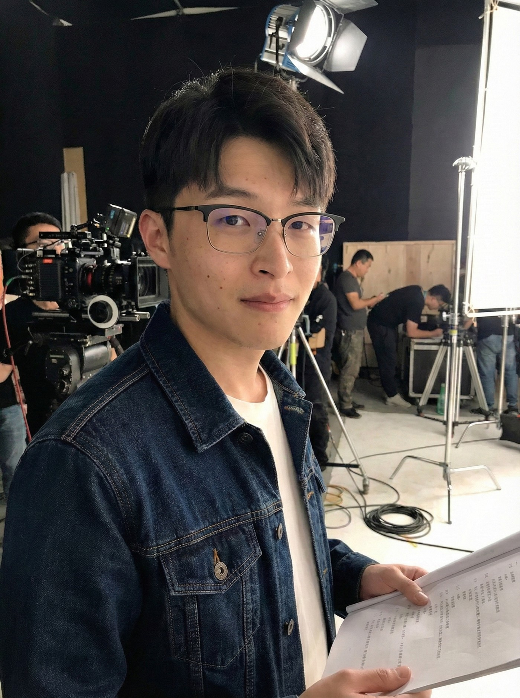

这次，他才是主角。
从剪辑台到片场，从独立导演到生成式影像。往下看 ↓
01 ／ 认识一下BEHIND THE CAMERA
从片场出发，
让创作的边界
再远一点。
我是毛鑫涛，现常驻杭州，从事独立导演工作。2017 年入行，从剧组剪辑助理起步，之后从编剧走向导演，参与并主导 TVC、宣传片、汇报片及纪录片制作。
我先后在浙江横店影视职业学院、浙江科技大学求学，本科学历。2024 年末开始拓展 AIGC 创作，将影视制作经验与生成式影像、模型训练及软件开发结合。导演始终是我的创作主线，技术让实现想法的方式更多。
毛鑫涛先有故事，再找方法。
02 ／ 一路走来FROM SET TO WHAT’S NEXT
不是换个身份。
是多一种
表达方式。
剪辑助理 → 编剧 → 导演
新的工具加入，讲故事的人没变。
2017故事，从片场开始。
- 2017 年起
从剪辑台，走进剧组。
入学后开始跟组实习，参与 CCTV《呼噜小精灵》第六季、第七季等剧集拍摄，担任剪辑助理。
剧集制作 · 剪辑助理 - 2020 年后
从编剧，走向导演。
在重庆交通大学安科院相关项目中，从编剧逐步承担导演职责，拓展从文字策划到影像实现的工作。
编剧 → 导演 - 2023 年后
独立执导，也独立判断。
在上海以独立导演身份参与并主导多部商业广告、宣传片、汇报片及纪录片，与深圳前海建投、中铁四局集团保持密切合作。现常驻杭州。
独立导演 · 商业与机构影像 - 2024 年末起
把创作带进新的现场。
拓展 AIGC 创作，熟练运用 ComfyUI，了解 Seedance 系列与 MiniMax H3，开展多项 LoRA 模型训练，并将智能体工具与软件开发用于创作实践。
生成式影像 · 创作技术
教学实践
经验，也可以传给下一个人。曾任余姚技师学院外聘指导教师。
03 ／ 我的能力DIRECTION, TOOLS & CRAFT
认真，但不板着脸。
点开纸条，看见经验背后的具体能力。
04 ／ 作品与实践FILM & PRACTICE
让经历，
有具体的落点。
剧集、商业与机构影像，还有自研工具。
进入作品页 ↗
留一个好位置
下一次，用作品见面。
正式作品目录待补充，不展示演示项目。
05 ／ 简历速览THE SHORT VERSION
导演是主线。
能力不止一面。
近十年影视制作经验，继续探索影像的新可能。
- 创作身份
- 独立导演 ／ 影像创作者
- 常驻城市
- 杭州
- 从业起点
- 2017 年 · 近十年影视制作经验
- 创作关键词
- 导演创作、AIGC 影像、模型训练、工具开发
- 教育与经历
- 本科学历
浙江横店影视职业学院 · 浙江科技大学
曾任余姚技师学院外聘指导教师 - 联系我
- 联系方式可在编辑室补充
好的故事，往往从一句话开始。